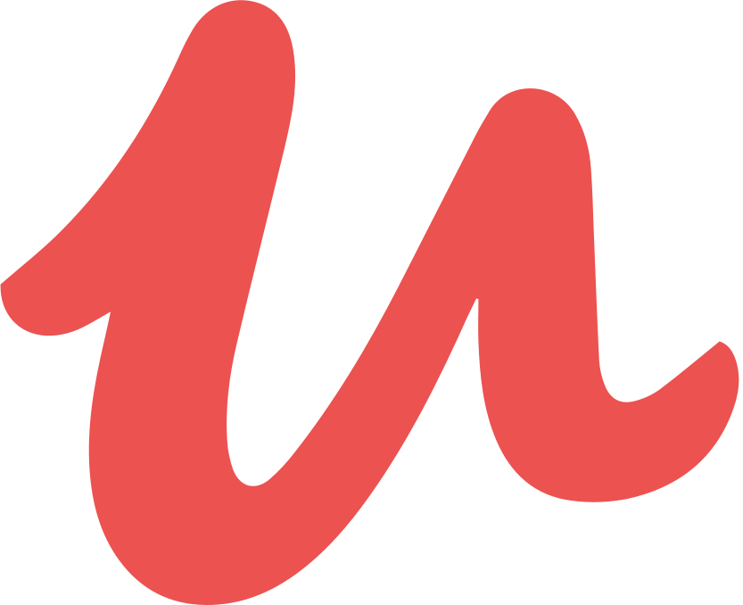

<div>
  <ion-grid fixed>
    <ion-row>
      <ion-col size="12">
        <ion-list lines="none">
          <div class="avatar">
            <!--  -->
          </div>
          <ion-list-header>
            <ion-text color="dark">
              <h1>مسعود مهاجری</h1>
              <h5>برنامه نویس فرانت</h5>
            </ion-text>
          </ion-list-header>

          <div class="p-info-container">
            <div class="p-info">
              <h3>تحصیلات</h3>
              <p>👈 کارشناسی نقشه برداری - دانشگاه تهران</p>
            </div>
            <div class="p-info">
              <h3>زبان انگلیسی</h3>
              <p>👈 پیشرفته</p>
            </div>
            <div class="p-info">
              <h3>وضعیت پایان خدمت</h3>
              <p>👈 معافیت تحصیلی</p>
            </div>
            <div class="p-info">
              <h3>صفحه گیت هاب</h3>
              <a target="_blank" href="https://github.com/mohajerimasoud"
                >👈 Github</a
              >
            </div>
            <div class="p-info">
              <h2>دانلود رزومه</h2>
              <a
                target="_blank"
                download="resume"
                href="https://drive.google.com/file/d/1Ld7HQz5kYN_u9niMlLuY-7CnusNaTAf9/view?usp=sharing"
                >👈 دانلود</a
              >
            </div>
            <div class="p-info">
              <h3>علاقه مندی ها</h3>
              <p>👈 علاقه مند به حل چالش ، معما و یادگیری</p>
            </div>

            <div class="learn-refs">
              <h2>درباره من</h2>
              <p>
                من یک برنامه نویس خودآموز هستم . شروع برنامه نوسی وب برای من از
                سر علاقه به بودن در جریان رشد و توسعه تکنولوژی بوده و امیدوارم
                روزی بتوانم بخشی از این توسعه باشم . لذت یادگیری برای من همواره
                در کنکاش کردن و آزمون و خطا کردن در VSCode بوده ، هرچند گذراندن
                کورس های زیر هم راهنمایی و کمک های خوبی برای من بودند .
                <br />
              </p>
              <ng-container *ngFor="let ref of refrences">
                <a [href]="ref.refrenceLink" target="_blanck">
                  <ion-chip [color]="ref.color" class="ion-margin-start">
                    <ion-avatar>
                      
                    </ion-avatar>
                    <ion-label>{{ ref.technologyName }}</ion-label>
                  </ion-chip>
                </a>
              </ng-container>
              <!-- <h5>تجربه های شخصی</h5> -->
              <p>
                همانطور که تولید و توسعه هرگز متوقف نمیشود ، یادگیری هم پایانی
                ندارد . علاقه مندم که وقتی را به گشتن در توییت های افراد و شرکت
                های معروف اختصاص دهم تا با ایده ها و چالش های روز تکنولوژی آشنا
                شوم .
              </p>
              <p>
                علاقه مند به چالش های جاوااسکریپتی و وسواس در جزئیات برای رسیدن
                به نتیجه ی مطلوب و همچنین علاقه مند به عمیق شدن در مباحث توسعه
                فرانت .
              </p>
              <h2>ارتبات با من</h2>
              <div class="contact-body">
                <a
                  class="contact"
                  href="https://t.me/mohajerimasoud"
                  target="_blank"
                >
                  <ion-icon
                    name="navigate-circle"
                    size="large"
                    color="primary"
                  ></ion-icon>

                  <h5>Telegram</h5>
                </a>
                <a class="contact" href="tel:+989198639256" target="_blank">
                  <ion-icon
                    name="call-outline"
                    size="large"
                    color="danger"
                  ></ion-icon>
                  <h5>09198639256</h5>
                </a>
              </div>
            </div>
          </div>
        </ion-list>
      </ion-col>
    </ion-row>
    <!-- <ion-grid fixed style="border: 1px solid red"> -->
    <ion-row>
      <ion-col sizeXl="2" size="0"> </ion-col>
      <ion-col sizeXl="8" sizeLg="12">
        <ion-list lines="none">
          <ion-list-header>
            <ion-text color="dark">
              <h1>مهارت ها</h1>
            </ion-text>
          </ion-list-header>
          <ion-item>
            <ion-grid fixed style="direction: ltr">
              <ng-container *ngFor="let skill of skills">
                <ion-item-divider mode="md">
                  <h5>{{ skill.title }}</h5>
                </ion-item-divider>
                <ng-container *ngFor="let detail of skill.detail">
                  <ion-row>
                    <ion-col sizeXl="10" size="9">
                      <ion-text color="medium">
                        <h5 class="align-items-center skill-detail">
                          <ion-icon [name]="detail.icon" [color]="detail.color">
                          </ion-icon>

                          {{ detail.name }}
                        </h5>
                      </ion-text>
                    </ion-col>

                    <ion-col sizeXl="2" size="3"> {{ detail.level }} </ion-col>
                  </ion-row>
                </ng-container>
              </ng-container>
            </ion-grid>
          </ion-item>
        </ion-list>
      </ion-col>
    </ion-row>
  </ion-grid>
</div>
